Real-Time Intelligence: Building event-driven AI apps and agents
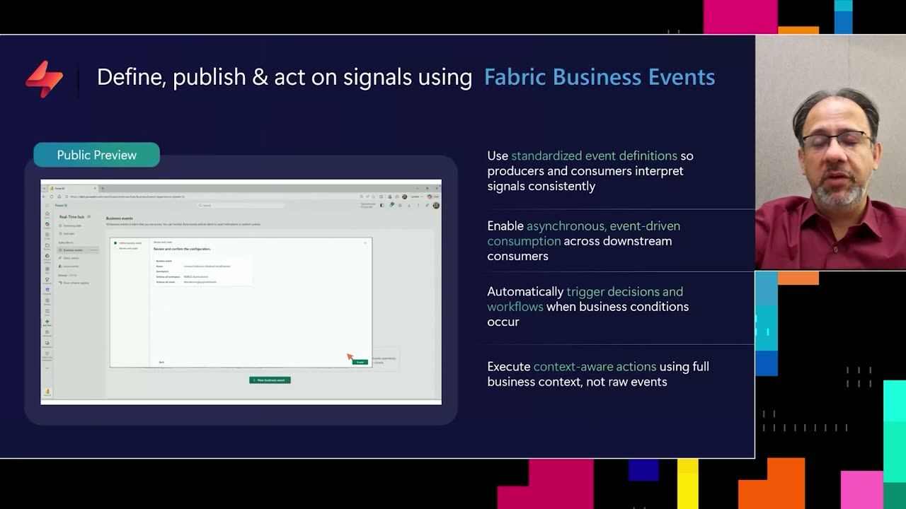
Chapters
Official description
Join this session to see how Microsoft Fabric Real‑Time Intelligence helps developers build event‑driven AI apps and autonomous agents that respond to live data in seconds. Real‑Time Intelligence unifies streaming ingestion, real‑time analytics, and actioning in a single governed experience—enabling teams to move seamlessly from signal to insight to action without complex pipelines.
Summary
Overview
Microsoft Fabric Real-Time Intelligence (RTI) is presented as a unified, SaaS-based platform for building event-driven AI applications and autonomous agents that move from streaming signal to insight to action in seconds. Using a stadium game-day operations scenario, the session walks through ingestion and stream processing with Eventstream, time-series analytics with Eventhouse, and agentic action via MCP, Fabric Skills, and the Operations Agent. The recurring thesis is that timely, high-granularity real-time data is foundational to accurate, useful AI ("no AI without RTI").
Key announcements
- Custom Stream Connector (private preview) [00:15:07
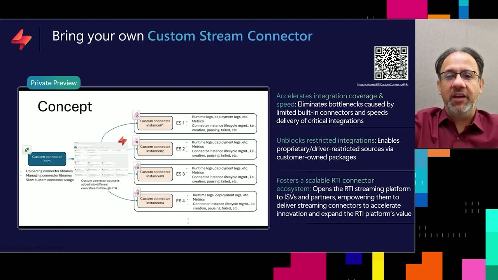
m05s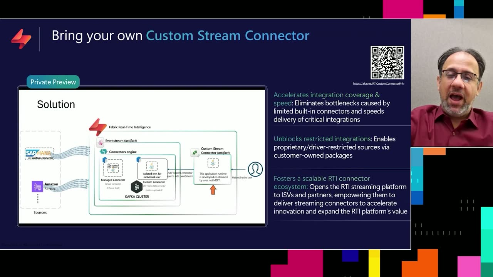
m10s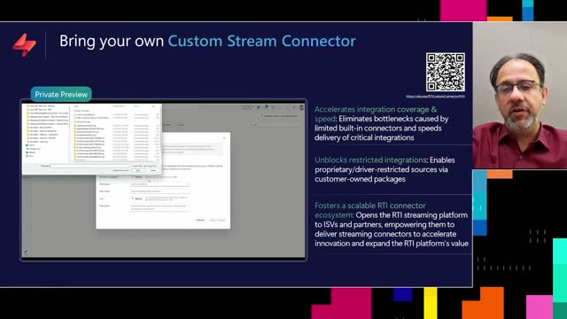
p05s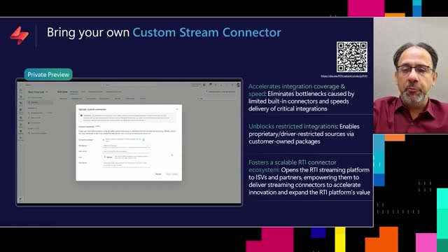
p10s] — Developers can build their own connector, upload the package, and have Fabric host it to bring custom sources into an Eventstream. - New and expanded Eventstream connectors [00:14:11m05s
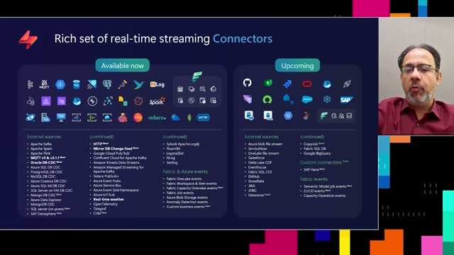
m10s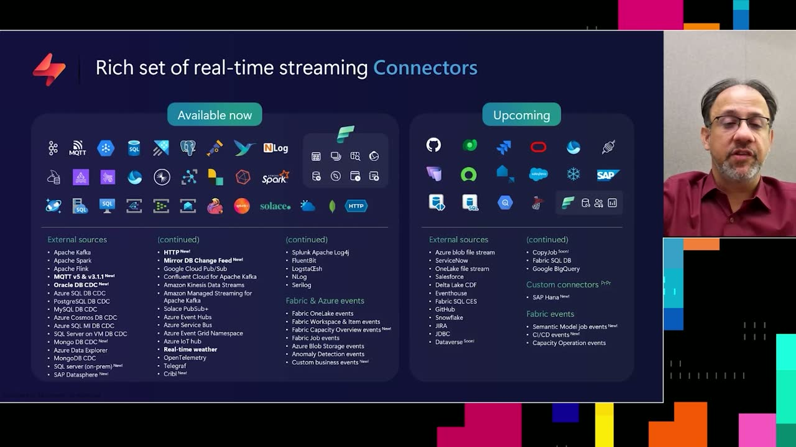
p05s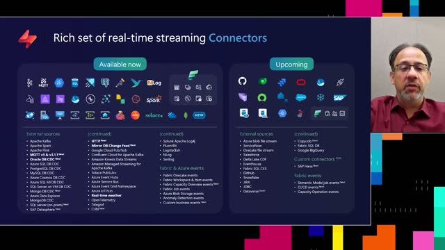
p10s] — Includes a new MQTT version, an Oracle DB Change Data connector, HTTP/REST endpoint ingestion, and a MirrorDB Change Feed connector, with roughly 40 connectors total. - DeltaFlow (public preview) [00:17:20
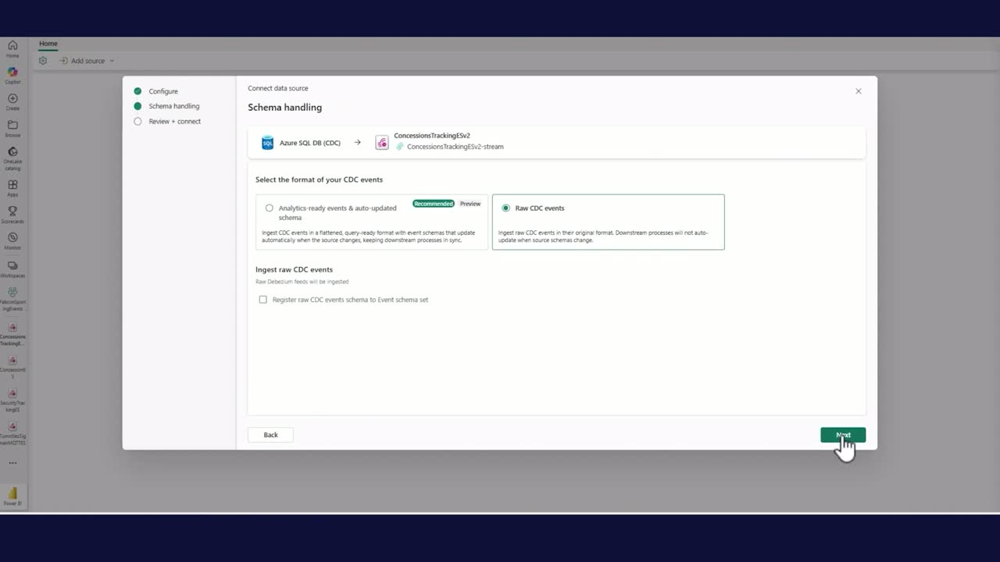
m05s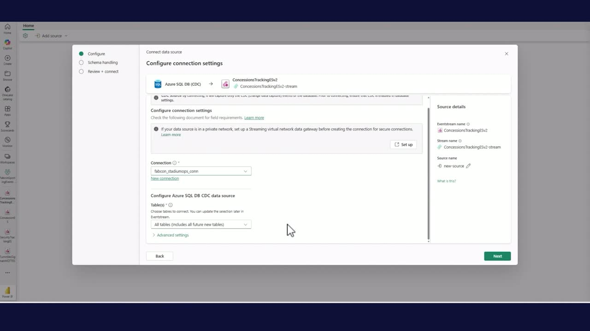
m10s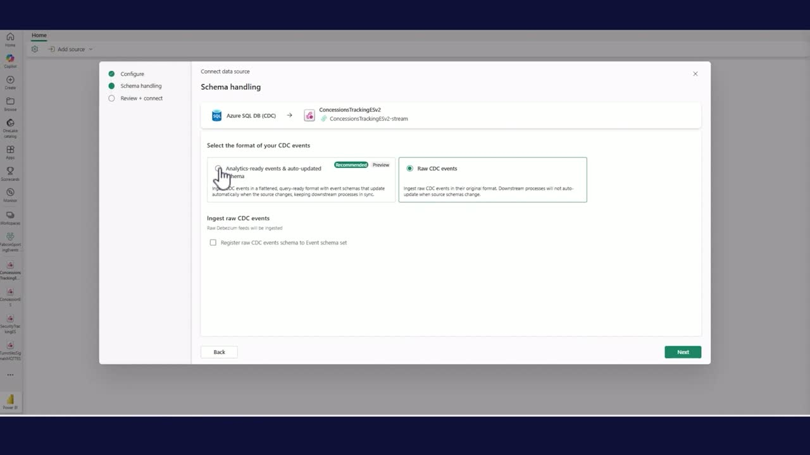
p05s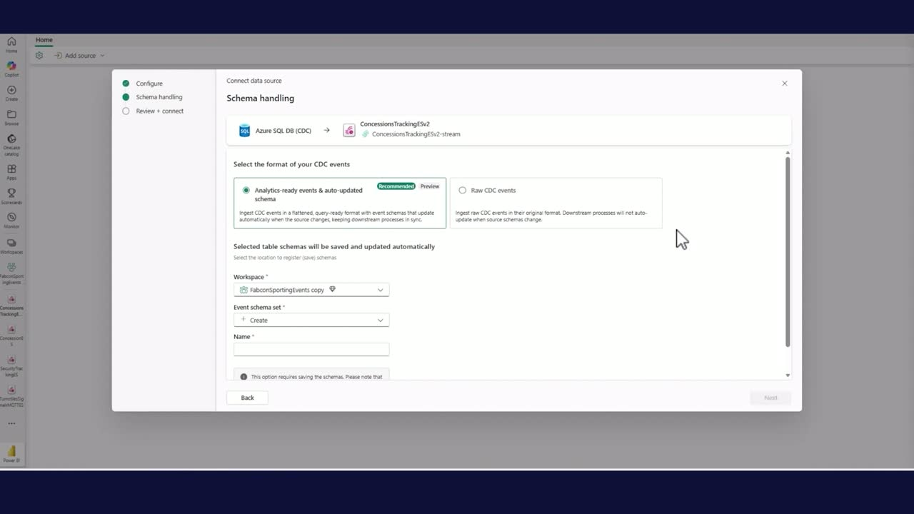
p10s] — Simplifies processing Debezium CDC events, adapting to source schema changes, and managing hundreds or thousands of source tables into Eventhouse. - Delta Change Feed connector (public preview) [00:22:09
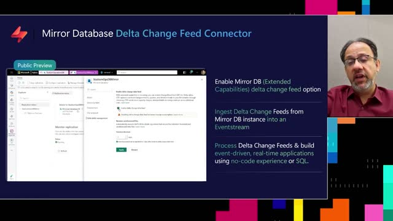
m05sm10s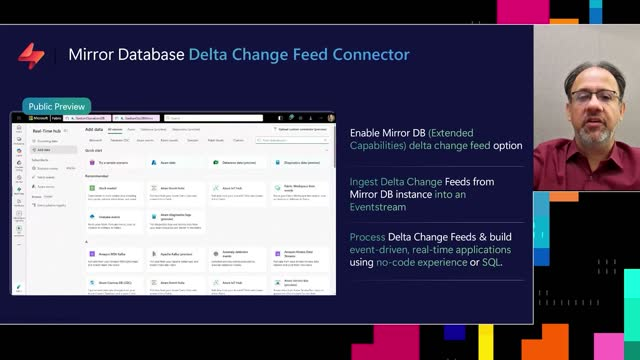
p05s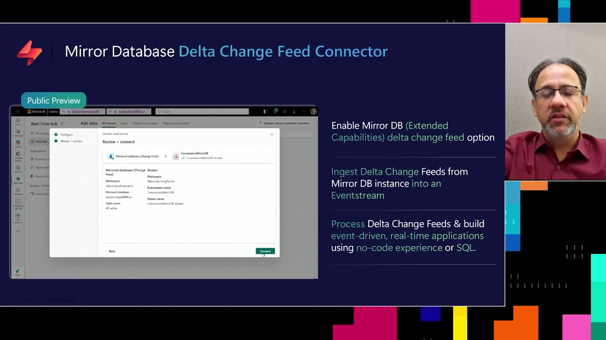
p10s] — Works with mirror databases and, soon, general lakehouse Delta Tables. - Eventhouse MCP and Fabric Skills [00:30:36
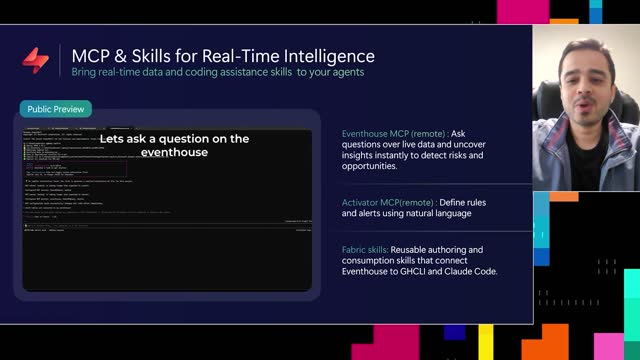
m05sm10sp05s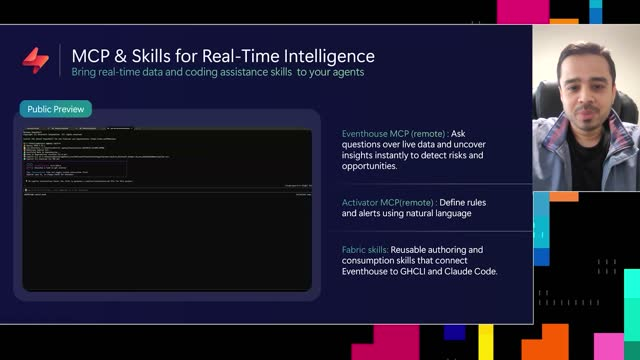
p10s] — Every Eventhouse endpoint exposes a remote MCP URL so agents can query live data, define rules in natural language, and use reusable skills via tools like GitHub Copilot CLI and Claude Code. - Operations Agent (generally available) [00:38:39
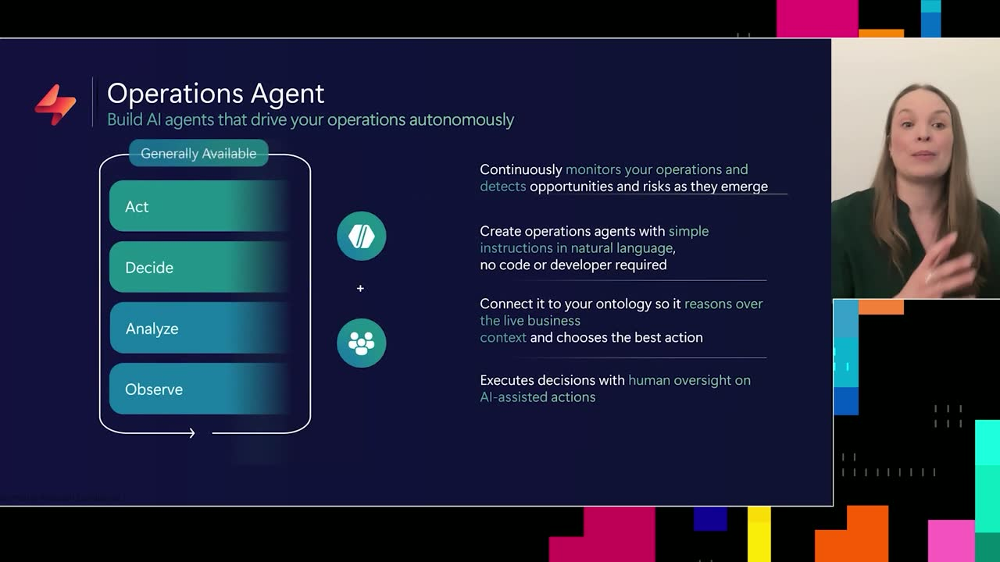
m05sm10s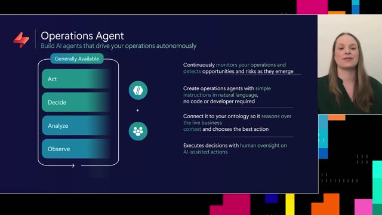
p05sp10s] — An autonomous virtual team member that observes, analyzes, decides, and acts 24/7, publishing into Microsoft Teams with recommended actions and root-cause analysis. - Anomaly Detector (public preview) [00:38:01
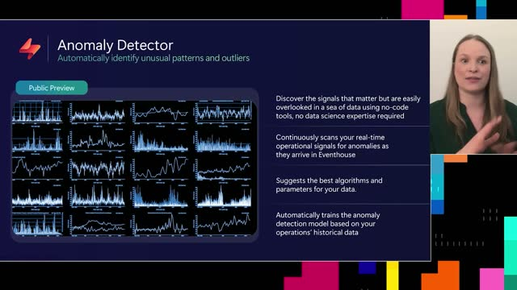
m05s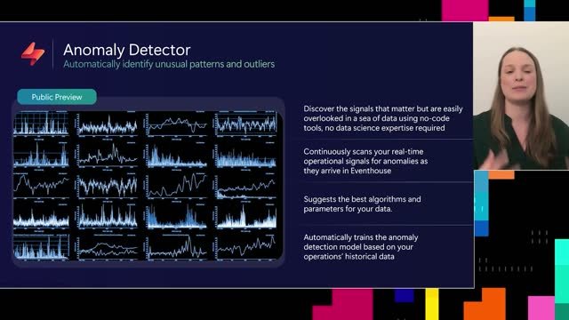
m10sp05s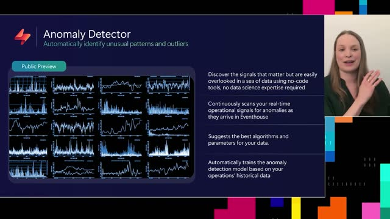
p10s] — Lets non-data-scientists select an out-of-box model fitted to their data's seasonality and emit anomaly events for the organization to subscribe to.
{kind=link}
{kind=link}
{kind=link}
{kind=link}
{kind=link}
{kind=link}
{kind=link}
{kind=link}
{kind=link}
{kind=link}
{kind=link}
{kind=link}
{kind=link}
{kind=link}
{kind=link}
{kind=link}
{kind=link}
{kind=link}
{kind=link}
{kind=link}
{kind=link}
{kind=link}
{kind=link}
{kind=link}
{kind=link}
{kind=link}
{kind=link}
{kind=link}
Topics covered
- Streaming ingestion via managed connectors (MQTT, SQL CDC, HTTP, Oracle, MirrorDB) routed to Eventstream with Kafka and AMQP endpoints.
- In-motion stream processing using SQL operators or no-code drag-and-drop, with schema registry governance and interactive test/debug.
- Window aggregations (hopping windows) for fraud/duplicate-ticket detection and late/out-of-order event handling policies.
- Spark Structured Streaming and Fabric Notebooks for Python-based processing and AI function calls; publishing Fabric Business Events.
- Eventhouse as a petabyte-scale, schema-less, multimodal store using Medallion Architecture (bronze/silver/gold), update policies, and materialized views.
- KQL and SQL querying, inbuilt forecasting, anomaly detection, geospatial and vector similarity search; Copilot natural-language-to-KQL.
- Agent-first analytics: building an end-to-end flow (item creation, ingestion, analysis) via CLI using MCP and Fabric Skills.
- Ontology-driven Operations Agent playbooks, activator alerts, and Eventstream observability through workspace monitoring.
Notable quotes
"We've heard from multiple customers, there really is no AI without RTI." — Tessa Kloster
"This table is holding close to 378 trillion records... approximately 13.5 to 14 billion new records are being added [per minute]." — Anshul Sharma
"Instead of just querying data, your agents can now reason, act, detect all in real time." — Anshul Sharma
Products and tools mentioned
- Microsoft Fabric
- Real-Time Intelligence (RTI)
- Fabric IQ / Ontology item
- OneLake
- Eventstream
- Eventhouse
- Activator
- Real-Time Hub
- DeltaFlow
- Power BI
- Copilot
- Operations Agent
- Anomaly Detector
- Fabric Data Agents
- Fabric Skills
- Eventhouse MCP
- Fabric Notebooks / Spark (Spark Structured Streaming)
- KQL / KQL Database
- Azure Event Hubs, Event Grid, Stream Analytics, Azure Data Explorer, Azure Maps
- Azure SQL / SQL CDC
- MQTT, AMQP, Kafka
- Oracle DB Change Data connector, MirrorDB / Delta Change Feed connector, HTTP connector
- Mirror databases, Delta Tables
- GitHub Copilot CLI
- Claude Code
- Microsoft Teams
Speakers featured
- Tessa Kloster — Partner Director of Product Management for Real-Time Intelligence and IQ
- Arindam Chatterjee — Principal Product Manager, Fabric Real-Time Intelligence team
- Anshul Sharma — Principal Product Manager, Real-Time Intelligence team
Follow-up resources
- Fabric IQ session (referenced as also being recorded)
- Fabric release planner and release notes
- Hands-on labs/workshops, forums, communities, documentation, and LinkedIn updates (sign-up via the links and QR codes shown on screen)
Frames
{kind=link}
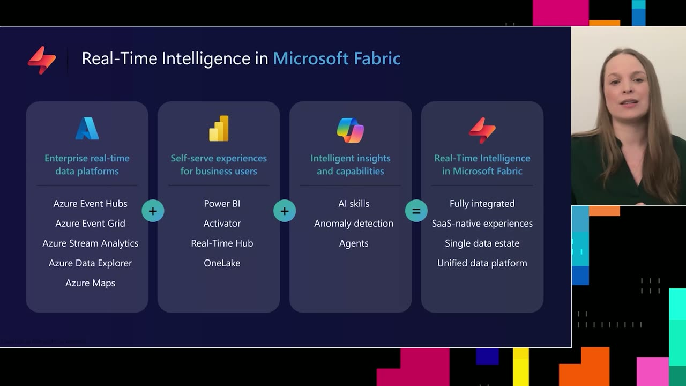
{kind=link}
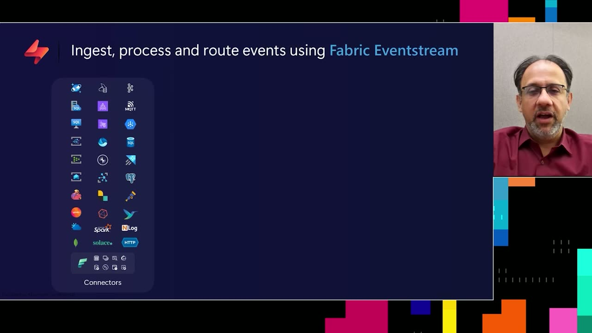
{kind=link}
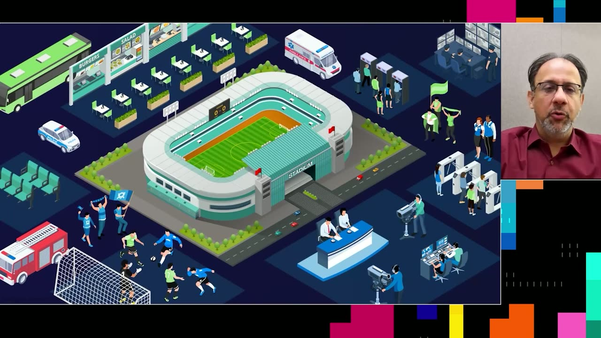
{kind=link}
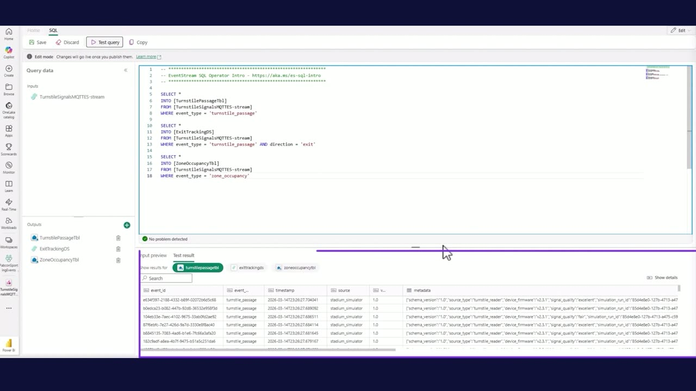
{kind=link}
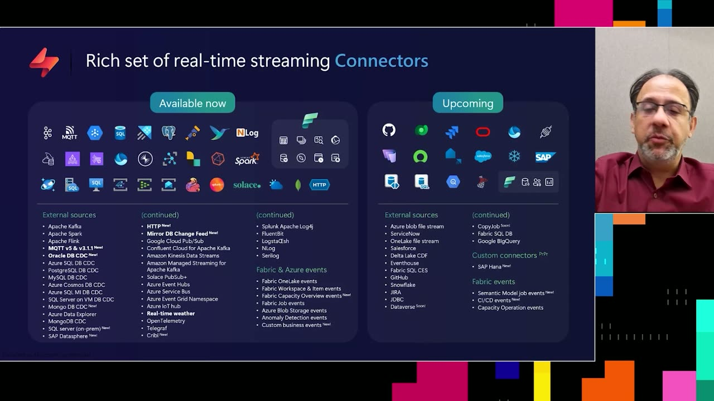
{kind=link}
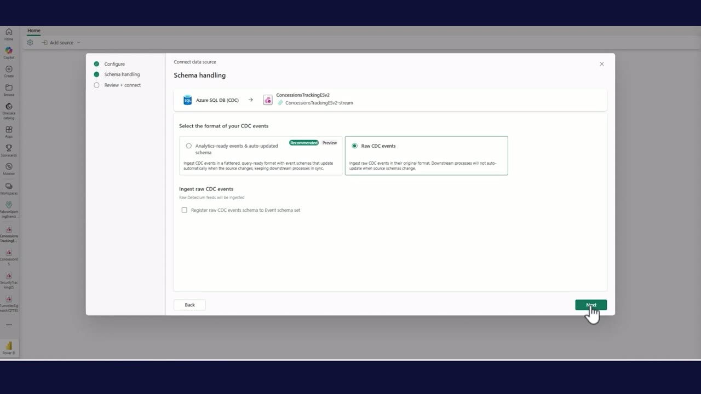
{kind=link}
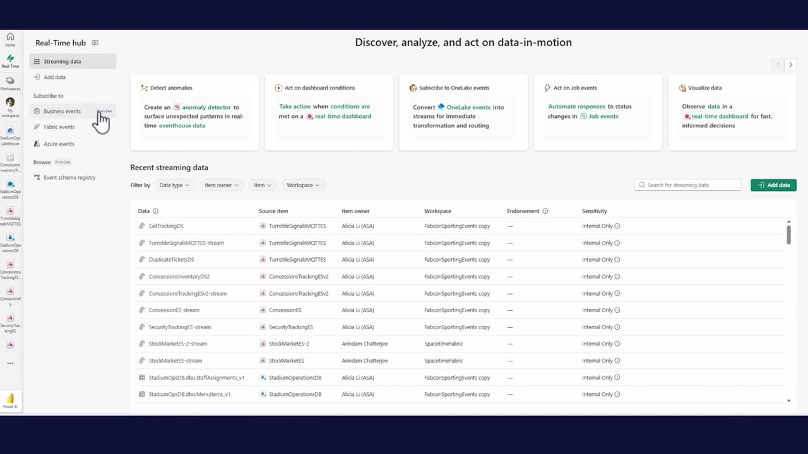
{kind=link}
{kind=link}
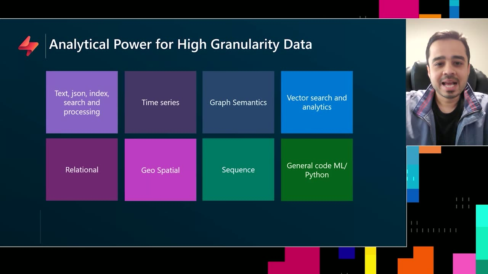
{kind=link}
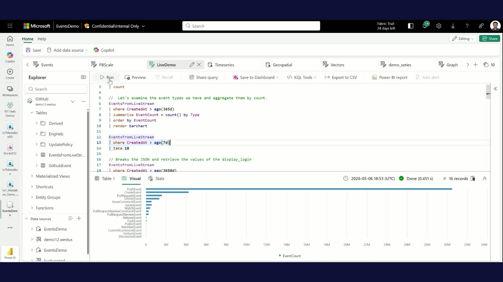
{kind=link}
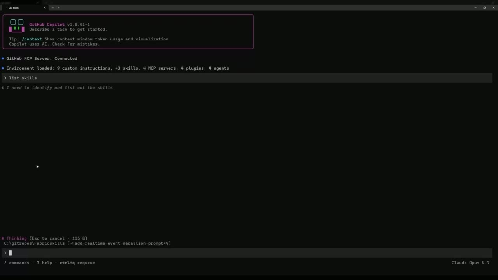
{kind=link}
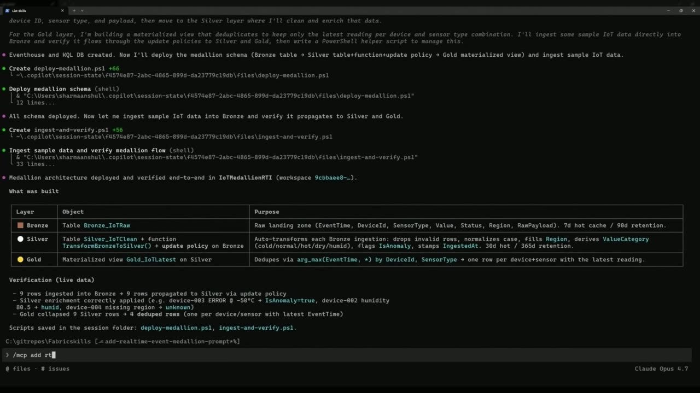
{kind=link}
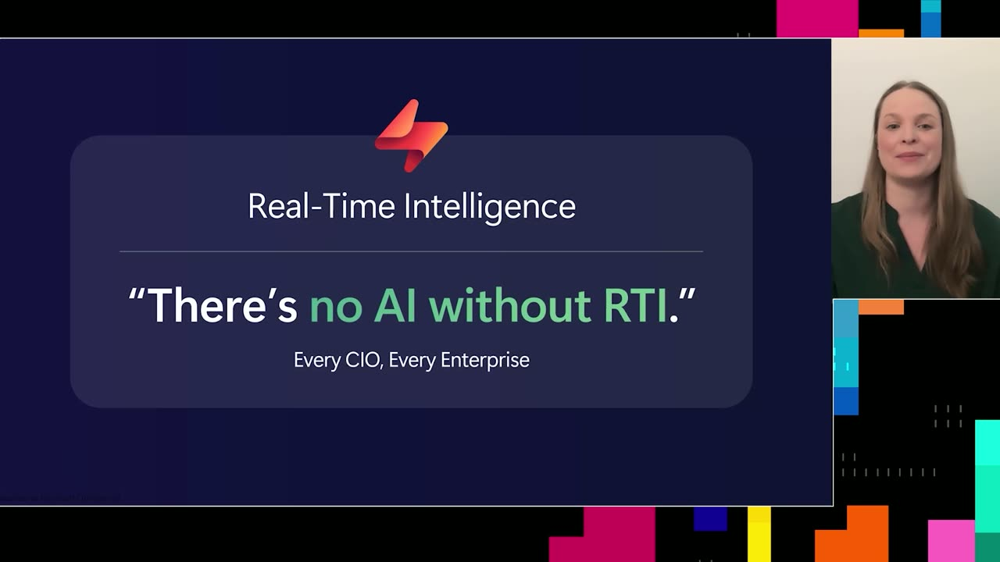
{kind=link}
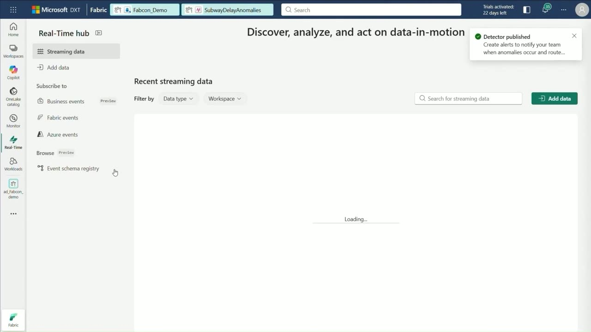
{kind=link}
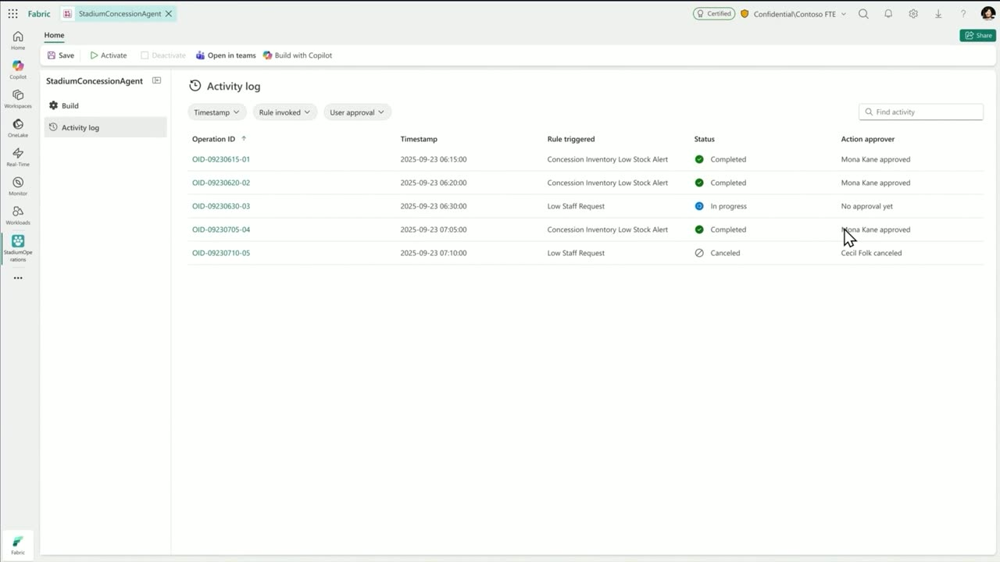
Transcript
Show / hide transcript (57,286 chars)
[00:00:03] TESSA KLOSTER: Hi, everyone. [00:00:04] Thank you for joining us. [00:00:05] Today, we're going to be talking about Real-Time Intelligence [00:00:07] and building event-driven apps and agents. [00:00:10] My name is Tessa Kloster, I'm a Partner Director [00:00:12] of Product Management for Real-Time Intelligence and IQ, [00:00:15] and I'm joined with my friends and colleagues, Arindam [00:00:18] and Anshul, who will tell you more about the different parts [00:00:20] of the system, as well as actually doing some live demos. [00:00:26] Let's jump in. [00:00:28] Everyone, of course, talks about AI, [00:00:29] but why does it really matter for your organization, [00:00:32] and how can you use it to unlock real value? [00:00:36] The reality is that AI really excels at specific things, [00:00:39] really being able to find all of these different signals [00:00:42] that matter and helping you understand, distill, [00:00:45] and really make good decisions in time through all [00:00:49] of this noise of information. [00:00:52] The reality is, a lot gets in the way today. [00:00:54] The data volumes are too large. [00:00:57] There are too many instances [00:00:58] for an individual human to understand. [00:01:01] Even if we are able to distill it and understand it, [00:01:03] sometimes we aren't able to actually act in time [00:01:07] to have a positive outcome. [00:01:10] All of this leaves a lot of opportunity for a system [00:01:13] to help, and especially in the era of AI, [00:01:17] but it needs more structure and layers to really have [00:01:21] that operational foundation for the modern enterprise. [00:01:25] If you think about all the signals coming in [00:01:28] and all the actions feeding back into that system, we really need [00:01:32] to have the different layers, [00:01:33] whether it's the unified data estate, really making sense [00:01:36] of it with a unified data platform, and building on top [00:01:39] of it with a unified intelligence platform [00:01:41] to really ensure that the entire team, both humans and agents, [00:01:45] are able to get the best and most out of the system [00:01:49] and be able to act in the right time. [00:01:52] This is where Microsoft Fabric comes in. [00:01:55] Microsoft Fabric is that unified data platform [00:01:57] for the AI transformation, and hopefully, as you know, [00:02:00] we have a wide range of capabilities [00:02:03] that span data integration, big data analytics, [00:02:08] out-of-box databases, Real-Time Intelligence, [00:02:12] which is what we're going to talk about today, [00:02:14] the IQ capabilities, which we announced back at Ignite, [00:02:17] as well as, of course, Power BI. [00:02:19] All of this is built on top of that unified Fabric platform [00:02:22] that has OneLake, Shared Governance, and, of course, [00:02:25] Copilot integrated throughout. [00:02:28] If I look specifically at Real-Time Intelligence, [00:02:30] what we were able to do is take the enterprise real-time data [00:02:34] platforms that we have, whether it's Azure Event Hubs, [00:02:36] Event Grid, Stream Analytics, Data Explorer, Azure Maps, [00:02:41] and marry it with the self-service experience [00:02:43] that are more tailored for those business users. [00:02:45] As you'll see in some of the demos, there's a wide range [00:02:48] of capabilities that are available, but if you think [00:02:51] about the democratization of some [00:02:54] of these really very technical and high-end systems [00:02:59] and make them available to users of all different types. [00:03:03] Of course, if you integrate the intelligent capabilities, [00:03:06] whether it's AI skills, agents, [00:03:08] all of this together provides a fully integrated SaaS experience [00:03:13] where we can offer Real-Time Intelligence directly natively [00:03:17] in Microsoft Fabric. [00:03:19] What is Real-Time Intelligence? [00:03:21] Well, when we talk about it, it's actually a number [00:03:23] of different capabilities. [00:03:25] Of course, we always start with the data, [00:03:27] so on the left-hand side here, you see the wide range [00:03:29] of different out-of-box characters we provide, [00:03:31] whether it's for Microsoft sources or across Cloud. [00:03:35] This makes it very easy. [00:03:36] Wherever your streaming event data is coming from, [00:03:38] you can get it directly into the system, and we'll tell you more [00:03:40] about that in the next sections. [00:03:43] As that data flows in, you can really leverage it in a number [00:03:46] of different ways across the system. [00:03:48] When I say a number of different ways, [00:03:50] we really do have different tools in the toolbox [00:03:53] that you can use to ensure that you are able to get the most [00:03:56] out of that data as it's flowing in. [00:03:58] Whether it's streaming and you want to process [00:04:00] and transform it, route it in real time, we have full, [00:04:03] rich analytics capabilities that's curated [00:04:06] for this time series data. [00:04:08] We have modeling capabilities, whether it's with geospatial [00:04:12] or the kind of relationship causals with Graph, [00:04:15] being able to visualize it [00:04:16] in a truly real-time and operational way. [00:04:19] Last but not least is really being able to actually act [00:04:21] on it, make sense of it, and change the business [00:04:25] and the systems around it to ensure that the business is able [00:04:29] to keep up at the speed of data. [00:04:33] All of this together has all the different capabilities [00:04:35] of Real-Time Intelligence, and we really are seeing customers [00:04:38] across the entire different industries, [00:04:42] all these different verticals you see here, [00:04:43] whether it's healthcare, sports, manufacturing, financial, [00:04:49] retail, all of these different businesses and verticals need [00:04:55] to improve their businesses and their operations, [00:04:57] to mitigate risks, to improve efficiency, [00:04:59] and Real-Time Intelligence is helping them do that today. [00:05:02] With that, I'm going to hand over to Arindam, [00:05:05] who's going to tell us a little bit more about that ingesting [00:05:07] and processing part of Real-Time Intelligence and get started [00:05:10] with the demo, and I'll hand it to you, Arindam. [00:05:13] ARINDAM CHATTERJEE: Thank you, Tessa. [00:05:15] I'm Arindam Chatterjee. [00:05:16] I'm a Principal Product Manager [00:05:18] on the Fabric Real-Time Intelligence team. [00:05:21] In the next few minutes, I'm going to talk to you [00:05:23] about how you can ingest, process, and route the events [00:05:27] in real-time into Fabric. [00:05:30] . [00:05:31] As Tessa mentioned in her section, we get a lot [00:05:35] of different sources that you can actually ingest your [00:05:38] data from. [00:05:39] We recognize that a lot of your data actually starts outside [00:05:42] of Fabric. [00:05:43] They are real-time in nature, and while you could write a lot [00:05:46] of code to get the data in, we provide a managed experience [00:05:51] through a whole bunch of connectors. [00:05:53] It's close to 40 of them now that you can start [00:05:56] with simple click and drag and drop experiences [00:06:01] to get your connectors into your system [00:06:06] and then use them to ingest the data. [00:06:09] From all those different sources, you're going [00:06:11] to route -- the messages are going to get routed [00:06:13] to an Eventstream, which actually exposes both the Kafka [00:06:17] and AMQP endpoints, so a lot of flexibility there, [00:06:20] whether you have got open-source clients or you're using AMQP. [00:06:26] Once the data is ingested, then you've got a couple [00:06:29] of different ways to process the events while they're in motion. [00:06:34] If you're familiar with SQL, then we have a SQL way [00:06:38] of creating and transforming and processing that data, [00:06:42] or you could even opt for a no-code experience, which is, [00:06:46] again, just a simple drag and drop of different operators [00:06:49] onto a surface to process. [00:06:52] Now, as the events are going in, they have a structure, [00:06:55] they transform, they change shape. [00:06:57] All of those can be registered into a schema registry [00:07:01] and then managed from there. [00:07:02] It provides you the governance capabilities [00:07:05] as the data is moving through your system, [00:07:09] but then once you're done processing [00:07:11] and transforming your events, where does it go next? [00:07:15] You have choices, a bunch of choices, including Eventhouse, [00:07:20] which is our high-performance, low-latency, [00:07:24] high-volume database for time series data. [00:07:28] Anshul will talk about that a lot more in detail. [00:07:32] Once the data is in Eventhouse, you can do your analytics, [00:07:36] but it also provides -- Eventstream also provides a way [00:07:39] to integrate the output of your stream processing [00:07:42] with other systems. [00:07:43] For example, you can actually send it [00:07:45] to another Kafka endpoint [00:07:46] if that's what your application requires. [00:07:50] Now, you can also act on the data, [00:07:54] and this is where you can set up rules and use activator to act [00:07:59] and integrate with other systems as well. [00:08:02] Last, but not the least, I wanted to talk about Spark. [00:08:05] As the data is coming in and you have your code, [00:08:09] stream processing code, all in Spark, particularly in Python, [00:08:14] then you can actually use Fabric Spark and Fabric Notebooks [00:08:18] to pull the data from Eventstream, process it, [00:08:22] and send it to further downstream endpoints [00:08:25] that Spark can actually talk to. [00:08:28] That's the end-to-end, but this is all in a high-level picture. [00:08:33] Let's see how it all comes together in a short demo. [00:08:39] All of us have been to a stadium for concerts, for games. [00:08:45] Next month, we are going to have a whole bunch of soccer games [00:08:50] around the country, around the continent, actually. [00:08:53] While we as fans go to the stadium and expect [00:08:56] to have a good time, there's a lot going on in that stadium. [00:09:02] As fans are coming in, as they are going [00:09:06] through the turnstiles, they're purchasing concessions [00:09:10] from the concession stands and enjoying the game. [00:09:13] There are lots of different points where data is going [00:09:15] to get generated, hundreds of different points [00:09:19] from where data is generated, but also, thousands of events [00:09:23] that are actually happening every single second. [00:09:27] The challenge of the game day operations people have [00:09:30] at the stadium is how to collect all of that data, [00:09:33] make sense of the data, and be able to take action [00:09:38] within minutes, if not sometimes in seconds. [00:09:42] That's what I will walk you through how to accomplish [00:09:45] that with RTI and with Event Streams. [00:09:51] Let me show you what the developer journey now [00:09:54] looks like. [00:09:55] I'm going to start in the real-time hub, [00:09:57] which shows me all the different streaming assets that I have. [00:10:02] I'm going to go to the Add Data section, [00:10:05] and you can see the dozens of connectors [00:10:08] that we already have made available. [00:10:11] In this case, I'm going to pick the MQTT connector, [00:10:15] as for my turnstile, MQTT is a great protocol [00:10:19] for getting events from my turnstile. [00:10:21] I'm just going to set up a secure connection to the broker, [00:10:25] MQTT broker, and then I'm going to set up the topic name [00:10:30] and then choose the MQTT version. [00:10:32] In this case, V3, which is very widely used in the IoT circles. [00:10:38] I'm going to quickly review what the connection details are, [00:10:41] and that's it. [00:10:42] In just a few simple clicks, I now have an Eventstream [00:10:45] that is actually ingesting data from all my turnstiles. [00:10:50] Next up, I'm going to go and process that event. [00:10:54] I'm going to go and do an edit mode, [00:10:56] launch the SQL code operator that I've mentioned earlier, [00:11:00] and then start writing the code. [00:11:03] You can see the edit query. [00:11:05] It starts you off with a very simple "Select Star" query [00:11:08] that I can actually now start to edit. [00:11:11] I'm just going to -- I've written some code already, [00:11:13] maybe with some agents. [00:11:16] I'm going to move that here, and you can start to see [00:11:19] that I can do, again, using very familiar SQL syntax. [00:11:23] Start to write the query, do some simple filtering, [00:11:26] and route to different destinations there. [00:11:29] Now, one important thing here, without having to move [00:11:31] to production, I can actually test the query [00:11:34] from the editor itself, which is a great help [00:11:37] and makes things a lot more productive [00:11:40] as you're developing your complex jobs [00:11:42] that you might have in your environment. [00:11:44] I'm going to go ahead and save. [00:11:47] I like what I see here, so I'm going to save the query [00:11:53] and publish the Eventstream, [00:11:56] and so now the Eventstream is actually live. [00:11:59] It is getting the events. [00:12:00] It's getting processed and getting delivered [00:12:02] into the Eventhouse destinations that I've set up. [00:12:05] Let me go ahead and open the Eventhouse, and I can verify [00:12:08] that all the turnstile passage events are showing [00:12:11] up as I expected, so great. [00:12:15] Now, I'm going to go back, [00:12:16] and then I'm going to see the next step. [00:12:19] Now, in a complex environment, [00:12:22] in your actual game day operations, [00:12:24] lots of things happen. [00:12:26] Events arrive late, they arrive out of order, and you need [00:12:29] to handle those situations. [00:12:32] With Eventstreams, we have actually made it very simple. [00:12:35] Just set up a few simple policies, [00:12:38] and it will guide how Eventstream deals [00:12:42] with the events that might show up late or out of order. [00:12:48] Now I'm going to go into my Eventstream again [00:12:51] and do something more interesting, which is, actually, [00:12:54] try to detect duplicate tickets being used. [00:12:57] That's fraud. [00:12:58] With very simple window aggregations, this time, [00:13:02] I'm actually using a hopping window that within 120 seconds, [00:13:06] if the same ticket gets used in different gates or even [00:13:10] at the same gate, then that's something [00:13:13] that Eventstream will be able to detect and warn you about. [00:13:17] That's it. [00:13:18] I've set up my second SQL code operator, [00:13:23] which can detect very simple fraud and alert me [00:13:27] in a very short amount of time. [00:13:29] Now I'm going to just go and set the alert. [00:13:31] I'm going to bring up the activator UI and each time [00:13:35] that a fraud or duplicate ticket gets used, I'm going to go ahead [00:13:40] and take some custom action, [00:13:42] which in this case is just alert my operation staff [00:13:46] to take some action. [00:13:48] With just a few simple clicks, you can see what kind [00:13:50] of powerful insights you can get from your turnstile events [00:13:56] and take some quick action as well. [00:13:59] Now, let's do a quick recap of what you just saw. [00:14:02] I walked you through MQTT as an example, but it's amongst dozens [00:14:07] of different connectors. [00:14:09] This list keeps growing all the time. [00:14:11] I want to call out the MQTT version that we just launched. [00:14:17] Oracle DB Change Data Connector is also available now. [00:14:22] HTTP, which is you can actually go to REST endpoints [00:14:25] and grab data from there automatically. [00:14:28] That's very popular amongst our customers, [00:14:32] and then MirrorDB Change Feed Connector, [00:14:34] another one that we are launching [00:14:36] to help you get change data feeds from databases, [00:14:40] from Delta Tables and mirror databases. [00:14:43] We also have a series of connectors that are on deck, [00:14:48] and they will be available very soon. [00:14:50] Please let us know if there is something [00:14:52] that is missing that we'll add. [00:14:57] As developers out here, we don't want [00:14:59] to be stuck necessarily behind somebody providing connectors. [00:15:02] We sometimes have our own connectors. [00:15:04] We have our own data sources, and so I'm very happy [00:15:07] to pronounce that we have a Custom Stream Connector, [00:15:10] which is currently private preview, [00:15:13] where you can create your own connector, upload the package, [00:15:17] and we will host that connector for you and to get data [00:15:21] from your sources into an Eventstream. [00:15:29] I already mentioned Eventstream. [00:15:32] Just a quick recap there, [00:15:34] it lets you use powerful SQL semantics, including joins, [00:15:39] window functions, which are particularly useful [00:15:41] for stream processing. [00:15:44] The same SQL query or SQL operator can now write [00:15:49] to multiple destinations. [00:15:52] Whether you send it to an Eventhouse or directly [00:15:55] to an activator, all of those are supported. [00:15:59] I mentioned complex event time handling policies. [00:16:03] These are particularly useful when you are in production [00:16:06] and you expect sometimes things not to go according to plan. [00:16:11] Last but not the least, for developers, [00:16:13] the productivity features around interactive preview, [00:16:16] testing, and debugging. [00:16:18] All of that, and there's a lot more that is coming [00:16:21] down the pipe, so please give it a try [00:16:23] and let us know what you think. [00:16:26] All right. [00:16:27] Now let's go to the next part of our demo. [00:16:32] In this, we are going to use a different set of sources [00:16:37] and do some processing there with Spark, so let's see. [00:16:41] Okay. I'm going to go now, you know, our game day participants [00:16:47] that have shown up, the fans have shown up, [00:16:49] but now they're going [00:16:50] to the concession stands and buying things. [00:16:52] Now I need to track, make sure [00:16:54] that the inventory is always there, so I'm going [00:16:57] to create another Eventstream. [00:17:01] This time, I'm going to choose SQL CDC as my source [00:17:04] because all my concession transactions, [00:17:07] the inventory levels, are being managed in Azure SQL. [00:17:10] I don't need to change that, so I'm going to grab the SQL, [00:17:14] the CDC events from there, from all the tables. [00:17:18] Then I'm going to make an important choice here. [00:17:20] I'm going to use DeltaFlow, [00:17:22] which is a public preview feature to quickly convert [00:17:25] that into an analytics ready form [00:17:27] and send it to an Eventhouse. [00:17:29] I'm going to do that, move forward, [00:17:34] name the schema registry where this is going to be stored, [00:17:37] all the schemas of the source tables, [00:17:39] and go ahead and connect. [00:17:42] That's it. [00:17:42] A few simple steps, and now you have CDC events [00:17:46] without me having to know about the resume or anything like that [00:17:49] if the simple CDC events are flowing into an Eventstream [00:17:53] and are going to go into a destination of my choice. [00:17:56] In this case, I'm going to go ahead [00:17:58] and put it in an Eventhouse. [00:18:00] I'm going to say that for every single source table, [00:18:04] use that schema to create the tables in Eventhouse. [00:18:11] I want separate tables for all the different schemas. [00:18:15] I'm going to go ahead and make a few other choices, [00:18:20] just the payload and not the metadata, [00:18:22] you know, things like that. [00:18:24] I'll go ahead and publish the Eventstream, and within seconds, [00:18:30] if you go to the Eventhouse, [00:18:31] you will see all the different tables that I had. [00:18:34] There are about six or seven tables. [00:18:36] They all get created. [00:18:37] The initial snapshot replication starts to happen, [00:18:41] and now your data from your SQL databases are available now. [00:18:46] The changes are available now in your Eventhouse, [00:18:50] and you can build any sort of applications [00:18:53] that Anshul is actually going to talk about. [00:18:55] You can build those on Eventhouse. [00:19:00] I'm done with the first setup, but now what I want [00:19:02] to do is actually go ahead and check my inventory [00:19:06] and be very quick to realize when inventory [00:19:11] in a particular stand, concession stand, [00:19:13] needs to be replenished. [00:19:14] I'm going to go ahead and use Spark [00:19:16] and some sprinkling of AI in this. [00:19:18] I'm going to open a Notebook. [00:19:20] I'm going to connect it to an Eventstream, [00:19:22] my concession Eventstream that I just created. [00:19:24] I'm going to say, "Read with Spark." [00:19:26] The system automatically generates a lot of code for you, [00:19:30] all the boilerplate code of setting up the connection [00:19:33] and starting to read from it. [00:19:36] In this particular case right now, it's to start, [00:19:38] I'm going to output to an Eventstream, to a console [00:19:41] but now I'm going to write the code. [00:19:42] A lot of it can be generated by AI, and I'm going [00:19:45] to create a prompt based on the data [00:19:48] of the inventory levels that I also got. [00:19:51] I'm going to go ahead and call "Generate Response" [00:19:55] to actually get the prompt from AI. [00:19:57] Once I have that, I'm just going to publish a new thing in Fabric [00:20:01] for business events, so very simple. [00:20:04] My Spark job is now actually publishing business events [00:20:08] to Fabric. [00:20:09] Now, where do I go see it? [00:20:10] I'm going to go back to Realtime Hub. [00:20:12] I see that the business event is there. [00:20:15] I open it, and I can already see trends, [00:20:18] but I want to take action, right? [00:20:20] Dashboard is one thing. [00:20:21] I'm going to take action. [00:20:22] Every time there is a replenish concession event happens, [00:20:26] I'm going to say, "Get an event," [00:20:28] and here you see a sample. [00:20:29] The AI is saying that, hey, you've got to queue up 200 units [00:20:33] of hot dogs, very important, from one place [00:20:37] in the stadium to another one. [00:20:39] I've got everything going, but it's important for me [00:20:41] on game day to monitor it. [00:20:43] That's where monitoring for Eventstream actually comes [00:20:46] into the picture here. [00:20:48] With, again, just a few simple clicks, all detailed telemetry [00:20:52] about analogs, about Eventstreams, will now be part [00:20:56] of your workspace monitoring databases. [00:20:59] You can create very simple dashboards [00:21:02] to monitor very specific things [00:21:04] that you might need for your operations. [00:21:11] Let's quickly recap now what I showed you. [00:21:14] Ffirst, DeltaFlow, we have had CDC connectors [00:21:19] in Eventstreams before, but now with DeltaFlow, [00:21:23] we make it even easier to process Debezium events, [00:21:27] to quickly transform them. [00:21:29] One of the challenges with dealing [00:21:30] with CDC is how do you adapt to schema changes [00:21:34] that happen on the source side? [00:21:36] Again, this is very easily taken care of by DeltaFlow. [00:21:40] Managing the hundreds of tables, if not thousands sometimes [00:21:43] of tables, on the source in your destination, again, [00:21:47] taken care of by DeltaFlow. [00:21:49] You can spend your time actually building the application, [00:21:52] rather than worrying about all the different plumbing here. [00:21:59] CDC connectors work great with relational databases, [00:22:03] but a lot of the data now is in Delta Tables, in Fabric, [00:22:07] as part of a mirror database. [00:22:09] We are introducing the public preview [00:22:11] of a Delta Change feed connector, which works great [00:22:15] with Mirror databases and very soon [00:22:18] with general lakehouse Delta Tables. [00:22:24] Spark Structured Streaming, Spark has a huge ecosystem, [00:22:28] so we are now bringing that closer to Eventstreams. [00:22:34] All the AI function calls, writing code in Python, [00:22:39] and being able to leverage all the ecosystem open-source [00:22:42] libraries, that's now in your hands. [00:22:47] Then Fabric Business Events, so again, it's not just [00:22:50] about data processing and creating more data, [00:22:53] it's about identifying business events and being able [00:22:56] to publish them and act on them. [00:22:59] That's what you saw in a portion of the demo there. [00:23:04] Last but not the least, putting it all together and actually [00:23:09] on game day, you need [00:23:11] to constantly monitor what's happening in your system. [00:23:15] That's where Eventstream Observability as part [00:23:18] of Workspace Monitoring gives you those capabilities. [00:23:22] With that, I'm going to hand it over to Anshul [00:23:26] to give you more details on the analytics and action part. [00:23:33] ANSHUL SHARMA: All right. [00:23:34] Thanks, Arindam. [00:23:36] Hi, everyone, I'm Anshul Sharma. [00:23:37] I'm a Principal Product Manager [00:23:39] in the Real-Time Intelligence team, and in this section, [00:23:41] we'll focus on analyzing and acting on real-time data [00:23:44] at scale and see it in action with, hopefully, [00:23:47] a few exciting live demos. [00:23:49] As Arindam showed us, once you have data streaming [00:23:52] in at high velocity and high granularity, [00:23:55] the next challenge becomes is how do you ingest, [00:23:58] analyze, and act on it? [00:24:00] That's exactly where Eventhouse comes in. [00:24:02] Eventhouse is a purpose-built store for event log [00:24:05] and time series analytics designed to operate [00:24:07] at petabyte scale with sub-second query performance. [00:24:11] Now, let me walk you through a typical end-to-end real-time [00:24:13] analytics flow. [00:24:14] On the left, you have connectors bringing data in. [00:24:17] Typically, this data is then modeled [00:24:19] in a Medallion Architecture in Eventhouse [00:24:21] with multi-tier data staging. [00:24:24] Data first lands in the bronze layer, [00:24:27] which is your raw ingestion layer. [00:24:29] Then you use update policies, [00:24:30] which are like lightweight transformation functions, [00:24:33] automatically transforming and enriching the data as it comes [00:24:36] and moving it into a silver layer. [00:24:39] You can then further optimize using materialized views [00:24:42] by deduplicating the data, by creating aggregation over it, [00:24:45] so that your reports can work on top of it. [00:24:48] For the query part, you can use KQL for deep analytics or SQL [00:24:53] for familiarity, depending on your workflow. [00:24:56] Now, on the output side, this data powers real-time dashboards [00:24:59] and Power BI reports for monitoring and reporting needs. [00:25:04] Importantly, everything as in Fabric is in OneLake. [00:25:07] All the data is in OneLake. [00:25:09] It isn't siloed. [00:25:10] It's fully integrated across your broader data estate. [00:25:14] Now, where these capabilities become really, [00:25:16] really powerful is by adding an intelligence layer on top. [00:25:21] Now, once you have data streaming in, [00:25:23] you can define rules, create alerts with activator, [00:25:27] even run anomaly detection and build ontology [00:25:30] that maps your business context onto your data. [00:25:33] Then, ultimately, you can have agents like Operation Agent [00:25:36] and data agents in Fabric that act on your behalf, [00:25:39] enabling AI driver automation [00:25:41] and real-time decisioning directly on top [00:25:43] of your streaming data. [00:25:47] Now, all these analytical capabilities are powered [00:25:49] by Eventhouse, which is a true multimodal analytics platform. [00:25:53] At its core, it's designed for diverse schema-less data. [00:25:58] You can inject text, JSON, metrics, time series data. [00:26:02] That means you don't have to pre-model or force your data [00:26:05] into rigid structure before you start getting value out of it. [00:26:08] Now, this becomes especially critical when you're dealing [00:26:11] with high granularity data across both time and space, [00:26:14] such as logs, telemetry, user actions, [00:26:18] or even IoT signals coming from your devices, right, [00:26:20] where the shape of the data typically is [00:26:22] constantly evolving. [00:26:24] Now, once this data is in, you're not limited [00:26:27] to how you analyze it. [00:26:29] You can seamlessly move across time series analysis, [00:26:32] let's say for decomposition, prediction, anomaly detection, [00:26:36] text and JSON searches, relational queries, and also, [00:26:39] sequence analysis and geospatial insights. [00:26:42] Not just that, you can run like vector similarity searches [00:26:45] for AI-driven rack scenarios. [00:26:48] Now, when you need deeper analytics, [00:26:50] you can directly use Python code [00:26:52] without moving data out of the system. [00:26:54] The key idea is this: Eventhouse gives you one engine [00:26:57] that handles diverse data and diverse analytics patterns [00:27:00] at scale and real-time. [00:27:04] Now, let's look at these capabilities in a demo. [00:27:07] We will analyze a few petabytes of data in real-time [00:27:10] and directly show you some of these capabilities. [00:27:13] Now I'm in a Fabric portal. [00:27:16] What you see on the screen is my KQL query set, which is attached [00:27:20] to one of the Eventhouses that I have. [00:27:23] In this Eventhouse, I have one of the tables. [00:27:25] We are going to start [00:27:26] by counting the number of rows that it has. [00:27:29] If I run this query, you can see at this point, [00:27:31] this table is holding close to 378 trillion records. [00:27:35] That's huge. [00:27:36] Now, let's look at all the data that's coming [00:27:38] in in the last one hour. [00:27:41] If I run this query, this time chart shows us every minute, [00:27:44] approximately 13.5 to 14 billion new records are being added. [00:27:48] That's immense processing that's happening in real-time. [00:27:52] Now, this is how you use KQL, but you can also use SQL [00:27:57] to run similar insights, right? [00:27:58] This is an example of a SQL query. [00:28:01] Now let's change gears, [00:28:03] and let's take a hypothetical scenario that you're part [00:28:06] of a GitHub team responsible for understanding user scenarios, [00:28:10] like user usage, like platform health, and so on. [00:28:13] I have live GitHub events coming in for all the developer actions [00:28:17] that are being taken on GitHub, like pull and push requests. [00:28:20] I have plugged it into an Eventstream, [00:28:23] which is flowing the data into an Eventhouse live. [00:28:26] If I run a count out of this table, [00:28:28] you can see this table has close to 3.6 billion rows. [00:28:32] If you look at what are the type of events that are available [00:28:35] for us right now, there are close to like few events, [00:28:39] like push event, create event, [00:28:40] based on what developers are doing on the platform right now. [00:28:44] Now, let's look at the shape of the data. [00:28:46] This data is a combination of structure [00:28:48] as well as semi-structure. [00:28:50] You see I have few fields, which hold a bunch [00:28:53] of JSON key value pairs. [00:28:56] Now, what is interesting is I can expand the JSON [00:29:00] and retrieve the values out of it just by using KQL. [00:29:03] In this case, I'm looking at the display name [00:29:07] of a particular user [00:29:08] and translating it into a fixed column. [00:29:11] Now I can start analyzing usage of a specific user, [00:29:15] what they are doing, understand how they operate and so on. [00:29:19] Just to make it a bit more interesting, [00:29:21] if you're responsible for forecasting the capacity [00:29:24] of GitHub usage, you can use the inbuilt "Forecasting" function, [00:29:28] which tells you what the pattern would look [00:29:30] like in the future based on existing data, [00:29:32] pretty powerful capabilities. [00:29:35] Now, in some cases, you might want [00:29:37] to have certain conditional queries, such as looking [00:29:39] at certain events based on certain conditions [00:29:42] and not just execute add-up queries [00:29:44] but get alerted when they happen. [00:29:46] You can create alerts using an activator on top, [00:29:50] which allows you to send Teams messages [00:29:53] or even trigger custom workflows, [00:29:55] invoke Notebooks, and so on. [00:29:58] Now, lastly, if you don't like writing queries, [00:30:02] you can use Copilot, which allows you [00:30:04] to ask natural language questions and outputs KQL. [00:30:08] This is also a great way to ramp up on learning KQL, [00:30:12] and you can get insights [00:30:13] out of it purely using natural language. [00:30:16] Now, I know some of you might be thinking that, hey, [00:30:20] this is all great, but it's 2026, [00:30:23] and my agents are doing most of the job for me. [00:30:26] What do you have for them? [00:30:27] The question shifts from how do I analyze my data [00:30:30] to how do you actually empower this agent? [00:30:32] Now, this is where MCP, and skills come in. [00:30:36] With Real-Time Intelligence, we have Eventhouse MCP, [00:30:39] where agents can directly ask questions over live data [00:30:42] and get instant insights. [00:30:44] We also have MCP enable other items like Activator, [00:30:47] where you can define rules and alerts all in natural language. [00:30:51] Lastly, we offer Fabric Skills. [00:30:53] Now, this Fabric Skills gives agents reusable capabilities [00:30:57] and domain knowledge on how to interact [00:31:00] with Real-Time Intelligence items by connecting to tools [00:31:03] like GitHub CLI and Claude Code. [00:31:05] Instead of just querying data, your agents can now reason, act, [00:31:10] detect all in real time. [00:31:12] Let's look at this in action. [00:31:14] Now, in the second demo, [00:31:16] I will try to create an end-to-end real-time analytics [00:31:19] flow by ingesting some data, [00:31:21] as well as analyzing it all using GitHub Copilot CLI. [00:31:27] I'm in GitHub Copilot CLI right now [00:31:30] and I have installed Fabric Skills, so let's start [00:31:33] by listing all the skills that I have available to me. [00:31:38] When I do that, you can see I have few skills available, [00:31:42] including Eventhouse, Eventstream Authoring, [00:31:45] and Consumption Skills, which we can use [00:31:47] to further build our flows. [00:31:49] Now, let's give it a prompt saying, create a new Eventhouse, [00:31:52] build a Medallion Architecture with all the things [00:31:54] that we just learned, and give some interesting insights to us. [00:32:00] Now, I'm going to give it appropriate permission [00:32:02] so it can start executing. [00:32:03] You can see the agent is able to leverage one [00:32:06] of the authoring skills that exist. [00:32:09] Now what it is trying to do is it will use it to learn how [00:32:13] to create an Eventhouse and then start executing. [00:32:16] Now it's trying to log in based on my credential, [00:32:19] and it's creating an Eventhouse for us. [00:32:22] Let's give it a second or two. [00:32:25] Yeah, it created an Eventhouse. [00:32:27] Now it's trying to find the URI of the KQLDB, [00:32:30] which is what we will use to interact [00:32:31] with it and create a schema. [00:32:34] Now, once it found the URI, now it's starting [00:32:37] to execute the schema, the Medallion Architecture [00:32:39] that we talked about, including all the three layers, [00:32:42] update policies, materialized views, [00:32:44] and so on, so it's creating KQL. [00:32:46] Hopefully, the LLM gods are [00:32:48] with us while this happens, and there you go. [00:32:54] Okay. It was able to deploy the schema, and now it's trying [00:32:59] to ingest some of the data. [00:33:01] This is part of the skill where we have told it to, hey, [00:33:03] ingest the data and verify after creating any of the stuff [00:33:07] that we asked you to, right? [00:33:08] So now it's ingesting data just to ensure [00:33:10] that our flow has been created as expected. [00:33:13] It's able to do that, and now it is giving us a nice summary [00:33:17] of what was built. [00:33:18] You can see it created three layers. [00:33:21] It created the transformation function, views, and so on, [00:33:25] but let's just not trust the agent. [00:33:27] Let's go in the UX and actually verify all [00:33:30] of the things that it did. [00:33:33] Now I'm in the Eventhouse UX. [00:33:36] This is my database that was created by the agent. [00:33:39] I'm going to move to an entity diagram view. [00:33:42] Now, entity diagram provides us a nice visual representation [00:33:46] of the schema that exists in my database, and you can see, [00:33:49] right, it is showing us [00:33:51] that there are three layers that are created. [00:33:52] If I click on the ingestion view, [00:33:54] I can see that the data is flowing in as expected. [00:33:58] We can also quickly verify the data that's coming [00:34:01] in by clicking on the data preview. [00:34:03] It looks like everything was set up correctly. [00:34:06] Now, at this point, we can start writing queries, but hey, [00:34:09] we said it's an agent-first analytics, [00:34:12] so why not ask our agent to do that? [00:34:14] Eventhouse comes up with that remote MCP URL, [00:34:17] which you can see here. [00:34:18] Every Eventhouse endpoint comes with that, so we can copy this, [00:34:22] move back to the GitHub CLI, and continue our analysis there. [00:34:26] What I'm going to do next is add the MCP that we just got [00:34:32] from Eventhouse, and I'm going to select an HTTP or remote MCP [00:34:36] and provide the URL that we just copied. [00:34:38] Just keep the default settings as is. [00:34:41] Now, it's asking us to authenticate. [00:34:43] Once it is done, our MCP is set. [00:34:48] Now, let's kind of look at what are the tools [00:34:50] that this MCP provides? [00:34:52] It provides us a bunch of tools like "Execute Query," [00:34:54] "Get Schema," and so on, [00:34:56] which will help our agent interact with Eventhouse. [00:35:00] Now, let's give it a weak prompt, saying, [00:35:01] "Share some interesting insights from my data that I just created [00:35:06] and use the MCP that we configured." [00:35:09] Now, hopefully, with this prompt, the agent is going [00:35:12] to use the tools that exist [00:35:14] and give us some interesting insights. [00:35:17] It's leveraging some tools, [00:35:18] and you can see it quickly executed five [00:35:21] or six different queries, read the data out of it, [00:35:24] and now it's kind of giving us what the data looks like, [00:35:28] what's the shape of the data, and things like that. [00:35:33] This is pretty cool. [00:35:35] Now, not just that. [00:35:36] It's also suggesting some of the follow-ups, [00:35:38] such as we can run advanced anomaly detection functions, [00:35:42] and so on. [00:35:43] Just to recap, what we did is using MCP [00:35:47] and Real-Time Intelligence skills, [00:35:49] we created an end-to-end flow, all using GitHub CLI, [00:35:53] starting from creation of items, ingestion of data, [00:35:57] as well as analyzing it with MCP, [00:35:59] all via an agentic way using CLIs. [00:36:03] Now, the same analysis capabilities you saw [00:36:06] with MCP are also available in our Copilot experiences, [00:36:09] where insights [00:36:10] and visualizations are generated directly for you. [00:36:12] Now, this is especially powerful for business users or anyone [00:36:15] who prefers a web-based, low-friction interface. [00:36:19] Whether you're building automated workflows with agents [00:36:22] or interactively exploring data through Copilot, [00:36:25] you're operating on a shared foundation [00:36:27] of analytics capabilities that we expose. [00:36:31] The same tools and capabilities are accessible to both agents [00:36:34] and humans, no matter how you choose to use it. [00:36:37] With that, now I'd like to hand it over to Tessa to walk us [00:36:40] through the final section. [00:36:43] TESSA KLOSTER: Great. [00:36:43] Thank you so much, Anshul and Arindam, [00:36:46] for really showing us some of those end-to-end pieces, [00:36:49] from ingestion all the way through to analyze, act, [00:36:52] and starting some of the AI capabilities that we have. [00:36:56] I'm going to take it a little bit further on the AI [00:36:57] and then close this out. [00:36:59] You could see right on the screen. [00:37:01] We've heard from multiple customers, [00:37:02] there really is no AI without RTI. [00:37:05] Now, what does that really mean? [00:37:07] It means that all of this time series, time-sensitive, [00:37:12] relevant, fresh data at this high volume, high granularity, [00:37:16] is really necessary in order to power and build these accurate [00:37:20] and useful AI solutions, such as the ones you just saw Anshul [00:37:25] demonstrate as well. [00:37:27] Of course, being at Build and focusing on the developers, [00:37:30] you saw the different capabilities that we have, [00:37:32] kind of more geared towards our technical audiences. [00:37:35] Just as Anshul was alluding to near the end, we really wanted [00:37:38] to ensure that these capabilities are available [00:37:40] to users of all different skills and capabilities. [00:37:44] The next couple of scenarios I'm going [00:37:45] to show the final demo is actually a bit more UI focused [00:37:49] and shows how you have this deep power, technical power, [00:37:52] and the capabilities of all of these different tools [00:37:56] in the toolbox we mentioned, but they're available to users [00:37:59] of all different skills. [00:38:01] The first one I'm going to mention is Anomaly Detector. [00:38:04] This is a public preview capability [00:38:06] that makes it very easy to leverage that streaming data [00:38:10] that you saw Arindam bring in and store [00:38:13] into the Eventhouse capabilities that you saw from Anshul. [00:38:16] With just a couple of clicks, [00:38:17] you're able to actually configure the right Anomaly [00:38:20] Detector model for your specific data. [00:38:23] You don't have to be a data scientist to leverage this, [00:38:26] and then, very quickly, you can actually publish [00:38:28] and emit those events for the rest [00:38:29] of the organization to subscribe to. [00:38:31] You'll see that in a demo shortly. [00:38:33] Where the power really comes in is when we look [00:38:36] at our Operations Agent capability. [00:38:38] Now, we're very excited to announce [00:38:39] that this is generally available, [00:38:41] and what it allows you to do is take all of these pieces [00:38:44] from the observing, the analyzing, the deciding [00:38:46] and acting, and actually get this loop running autonomously [00:38:51] as if you have a new member of your team, a virtual team member [00:38:56] in your operations team, that can really do all [00:38:58] of these different stages, reason and understand, [00:39:01] and actually act to help the organization move, really, [00:39:04] at the speed of the business. [00:39:07] With that, let me just jump in and show it running [00:39:10] so you can see the different capabilities that we have. [00:39:13] We're actually going to start in the Anomaly Detector experience. [00:39:16] You can see here, this UI is really just asking me to choose [00:39:20] which table and which field that I want [00:39:23] to be monitoring for those anomalies. [00:39:27] Just by connecting that data, it's actually going [00:39:29] to analyze the particular data that I've provided and determine [00:39:34] which out-of-box models that we have are best suited based off [00:39:39] of the seasonality, the pattern that exists within the data. [00:39:43] Again, I'm not a data scientist, but you can see here, [00:39:45] it has the different models that are available. [00:39:47] It tries to explain them in very user-friendly terms, [00:39:50] and because I can actually see my data on the left-hand side [00:39:53] and I can see those anomalies [00:39:55] that are being detected based off of the different models [00:39:57] that I choose, I have higher confidence [00:40:00] and I have better understanding of what it's actually doing [00:40:03] with the system and helping me have that confidence [00:40:07] that this is the right model for my system. [00:40:09] It's going to actually tell me where the anomalies are, [00:40:12] and I can publish it directly into the organization. [00:40:16] Now that it's publishing and running, [00:40:17] so as new data comes in, new anomalies are going [00:40:19] to be detected, I can go back to the Realtime Hub, [00:40:22] as Arindam mentioned, that central place for all [00:40:25] of your streaming and event data, [00:40:26] and I can actually subscribe and create a rule directly [00:40:30] on those events that my Anomaly Detector is emitting. [00:40:33] I can choose which fields I'm looking for. [00:40:35] I can maybe even filter down to a specific set of the events. [00:40:39] Maybe I don't want to alert for all [00:40:40] of the different pieces that are coming in. [00:40:43] Just like that, I have a new alert ready and listening [00:40:47] for any new anomalies that I can share across my organization. [00:40:51] As I mentioned, we're going to take it even further [00:40:53] with the Operations Agent capability. [00:40:55] We're very excited [00:40:57] to be releasing this more broadly available. [00:40:59] You go directly into Fabric, and you can start [00:41:01] by creating a new Operations Agent. [00:41:04] What it's going to do is it's going to load the configuration. [00:41:06] Once again, you can see, very user-friendly. [00:41:08] On the left-hand side, I'm going to provide natural language [00:41:11] to onboard my agent as if it's a new team member. [00:41:15] I'm going to give it business goals. [00:41:16] I'm going to give it specific instructions, and we also want [00:41:20] to connect it back to the data, but we don't want [00:41:22] to just connect it to the raw data. [00:41:24] We want to actually leverage the new semantics that comes [00:41:28] through in our ontology item. [00:41:30] If you haven't heard about the ontology item, [00:41:32] please do go check out the Fabric IQ session that's also [00:41:35] being recorded, but by connecting it to this item, [00:41:38] what I'm able to do is understand all [00:41:39] of that business context, the entities, directly out of box, [00:41:43] and even actions that this agent can take. [00:41:45] Now that I've moved ahead, I've configured the agent, [00:41:47] you can see all of this information [00:41:49] on the left-hand side, all I have to do is save [00:41:52] and actually generate the playbook. [00:41:54] What a playbook means [00:41:55] for an agent is really its understanding [00:41:58] of all this information, of the data, of what it's trying [00:42:01] to accomplish, and what actions it can take. [00:42:04] Very quickly, you can see this playbook is generated. [00:42:06] It's telling me back what terms it understands, [00:42:09] so what entities. [00:42:10] It tells me the rules, what it's looking for, and what it's going [00:42:13] to do about it, and just like that, [00:42:15] I can publish the agent directly into where our team works, [00:42:17] which is in Microsoft Teams, [00:42:19] and you can see it's already running 24/7. [00:42:22] As soon as it detects something that matches one [00:42:24] of those conditions, it's going to alert the team. [00:42:26] It's going to tell you what it's found. [00:42:28] It's going to have that data information directly there. [00:42:31] It's going to recommend an action [00:42:34] and even give you an option to investigate further [00:42:36] and do a bit more root cause analysis. [00:42:38] In this case, I'm going to choose that option, [00:42:40] and with that root cause analysis, [00:42:41] it gives me even more insight into what it identified [00:42:45] and gives me more confidence in actually the action [00:42:47] that it's recommending we're going to take. [00:42:49] Just like that, from the same experience, I can confirm I want [00:42:52] to take the action, confirm the parameters, [00:42:54] and actually have the agent go and update the system. [00:42:59] Any of these capabilities, of course, you want to be able [00:43:01] to monitor and understand what's going on. [00:43:03] We have a rich set of capabilities [00:43:05] for understanding the activity, understanding what's running, [00:43:09] what's pending, being able to actually go [00:43:11] into a particular activity [00:43:13] and understand what rule it was looking for, [00:43:15] what query it executed, what decision it made. [00:43:18] All of this information is, once again, [00:43:20] to give me that high confidence [00:43:21] about the system and how it's running. [00:43:24] I know this was a lot of content [00:43:26] between myself, Arindam, and Anshul. [00:43:27] We really tried to give you kind of a full end-to-end picture [00:43:30] of Real-Time Intelligence in Microsoft Fabric [00:43:33] from our streaming, analysis, modeling, visualizations, [00:43:36] and acting experiences. [00:43:38] Then just leveraging the common theme you saw [00:43:41] around the stadium operations, you can kind of see how all [00:43:46] of these different pieces work together [00:43:49] to build an entire solution to help run any business. [00:43:52] Of course, in this case, you saw some of the highlights [00:43:55] around that stadium operations, [00:43:56] but whether it is stadium operations [00:43:59] or operational reporting, connected assets, [00:44:04] having that kind of command center for everything, [00:44:07] Real-Time Intelligence really does unlock a wide range [00:44:10] of scenarios and capabilities, leveraging many [00:44:13] of the different pieces that you saw today existing and some [00:44:15] of the new announcements that we have. [00:44:17] If you haven't tried it out yet, please do go take a look, [00:44:21] and when we look at that unified intelligence platform for AI, [00:44:24] you really see how all of these different pieces layer on top [00:44:27] of each other to essentially provide you that full system [00:44:30] to really build out, whether it's your human teams [00:44:34] or your agent teams, to really ensure [00:44:35] that they improve the business in time. [00:44:39] There's so many different announcements [00:44:41] that we've been making over the last few months and even [00:44:44] at Build and going forward. [00:44:46] Definitely keep a close eye on our release planner [00:44:49] and the release notes because Fabric is releasing every single [00:44:52] week, and we have so many different capabilities [00:44:54] coming through. [00:44:55] Quickly, some highlights, the operations agent GA, [00:44:58] you heard more about the business events, [00:45:00] you saw connectors across Eventstream, new capabilities [00:45:03] with Activator, including new actions, so just a wide set [00:45:07] of features and much, much more to come. [00:45:11] If you're not yet familiar with RTI, [00:45:15] and I also mentioned a little bit IQ, [00:45:17] definitely leverage our hands-on learnings that we provide [00:45:20] with the workshops in many different countries. [00:45:24] Leverage these links and these QR codes to go sign up. [00:45:27] They're all free and available for you to try out today. [00:45:31] When in doubt, we have so much different information, [00:45:34] whether it's, again, those hands-on labs; you can engage [00:45:36] in the forums or the communities using our documentation [00:45:40] or following, again, the release planner [00:45:43] or the different LinkedIn updates we do. [00:45:45] We have so much information out there, and we're really excited [00:45:48] for you to learn more about Real-Time Intelligence, [00:45:50] for you to try Real-Time Intelligence, [00:45:52] and to give feedback and we can keep building the [00:45:54] solution together. [00:45:56] With that, I will say thank you so much for joining us [00:45:58] and enjoy the rest of your Build.